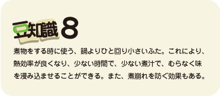

dashi写真：ダシ
代表的なダシ2つを示したが、このほか、昆布ダシ、かつお節ダシ、干し椎茸ダシなどいろいろある。昆布ダシは味に深みを加え、かつお節ダシは何にでも合う。干し椎茸ダシは煮物やそうめんのつゆなどに合う。ま、いろいろあるけど臨機応変に、自分の好みに応じて組み合わせ自由にやればいい。お勧めは（１）の煮干ダシ。経済的でみそ汁には欠かせない。（２）の混合ダシはお店のダシなので、そりゃー、上品でおいしいダシが取れるけど、家庭では面倒でめったに作るものではない。だから、煮干ダシで十分。 昆布は使いやすい大きさに切っておいて、プラスチックの容器や空きびんに入れておくといい。何にでも使えるから、手間要らず。取りやすい所においておけば、料理のときにちょちょっと放り込んで使うといい。また、一緒に煮込んでもいい。
〔いざと言う時は〕
普段の家庭料理ならば、ダシパックや顆粒のダシの素が簡単で便利。常備しておけば緊急のときに役に立つ。ただし、ダシの素は化学調味料が入っているものが多いので、本物を志向するのであればせめて、ダシパックがいい。また、塩分が入っているものもあるので、濃い味にならないように要注意。煮物には、麺つゆや本つゆなどを利用するのも、手抜き料理でたまにはいい。
kabocha写真：かぼちゃの含め煮
かぼちゃの含め煮（２人分）
- 材料
- かぼちゃ３００ｇ（１/4個）
- だし汁１カップ：市販の麺つゆや本つゆを薄めて使う。薄め方は濃縮度により異なるので、製品の使い方に従う。
- 砂糖大さじ１/2
- 酒大さじ２
- みりん大さじ２
- 作り方
- ①かぼちゃは種をとり、一口大に切る。
- ②だし汁を鍋にとり、かぼちゃを加えて火に掛ける。
- ③煮立ったら、砂糖と酒を加え、落としぶたをして弱火でコトコト煮る。
- ④煮汁が少なくなったら、竹串で軟らかさを確認して、火を止める。
- グレードアップ
- きぬさやを茹でたものや木の芽（さんしょの若い葉）を添えると彩りがよくなる。 かぼちゃを面取りしておくと煮崩れしにくくなる。 ひき肉を炒めて、かぼちゃと一緒に煮込んでもよい。
応用
大根の煮物 材料：大根１０ｃｍ分、だし1カップ（上記と同じく、市販の麺つゆを薄めて使う）、酒大さじ２ 薄口しょう油少々。
- 作り方

①大根は５ｃｍ幅の輪切りにし、たて半分に切る。
②大根は軟らかくなるまで下茹でしておく（米のとぎ汁を使うとベスト）。
③だし汁を鍋にとり、大根を加えて火に掛ける。
④煮立ったら、酒を加え、落としぶたをして弱火でコトコト煮る。
⑤味を見て、薄いようなら、薄口しょう油を少々入れる。
⑥煮汁が少なくなったら、竹串で軟らかさを確認して、火を止める。
季節に応じて、筍を加えたり、里芋を加えたり、イカやこんにゃくを加えてもよい。